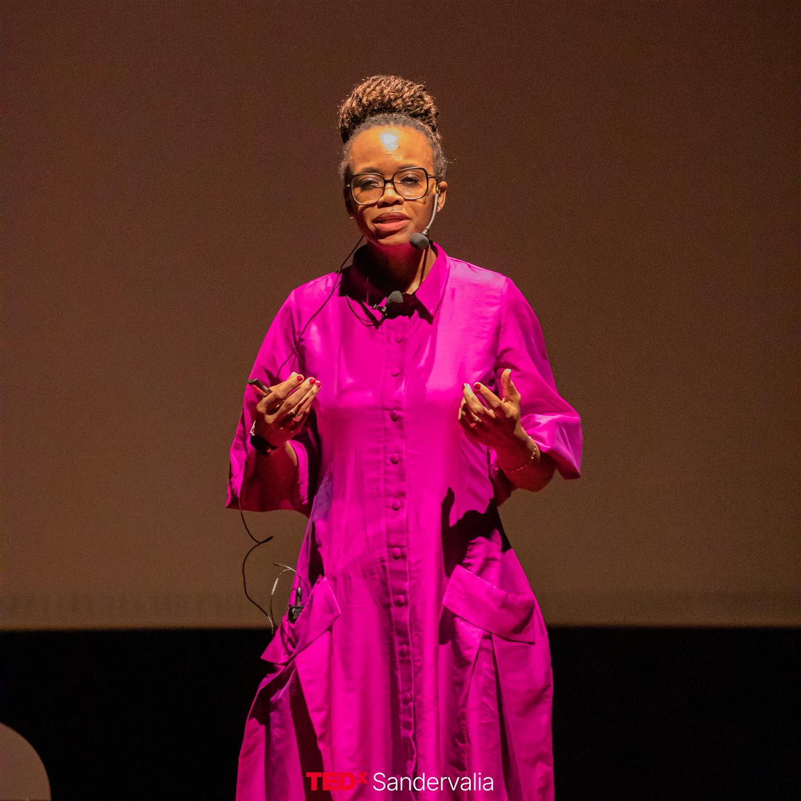
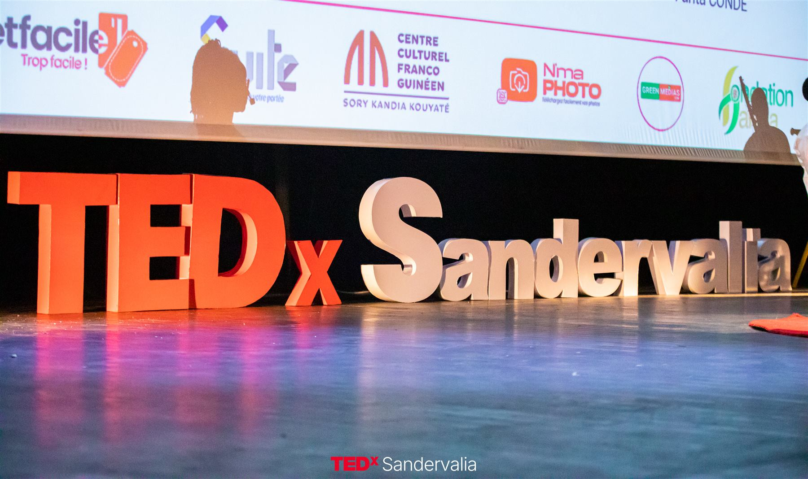
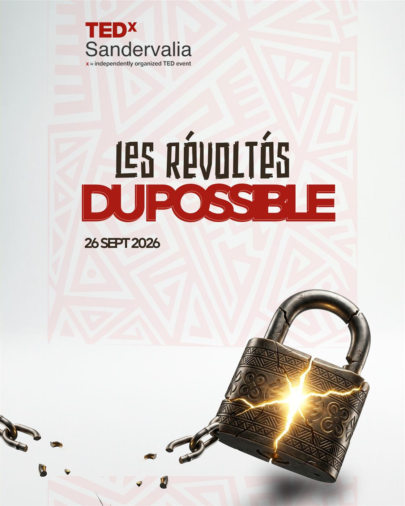
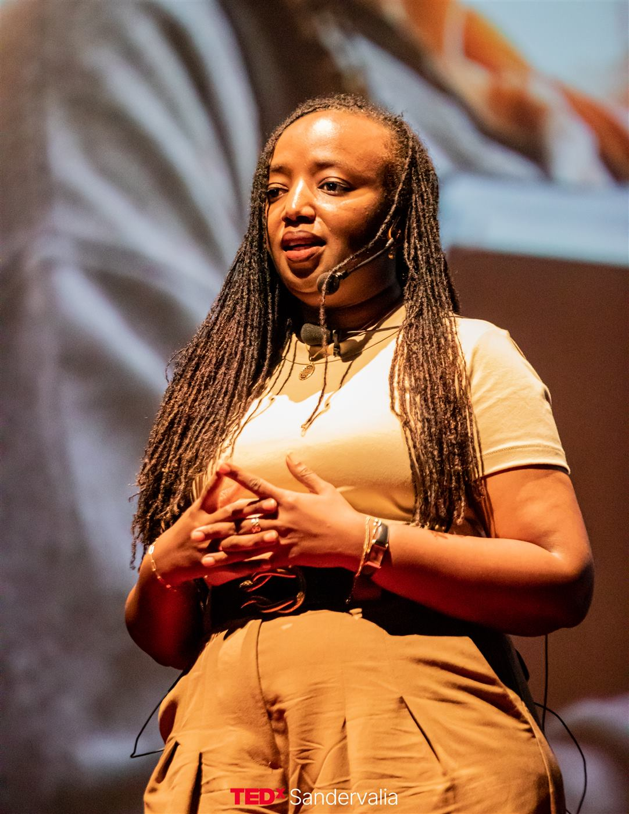
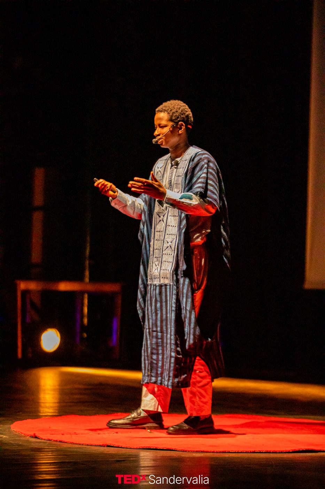
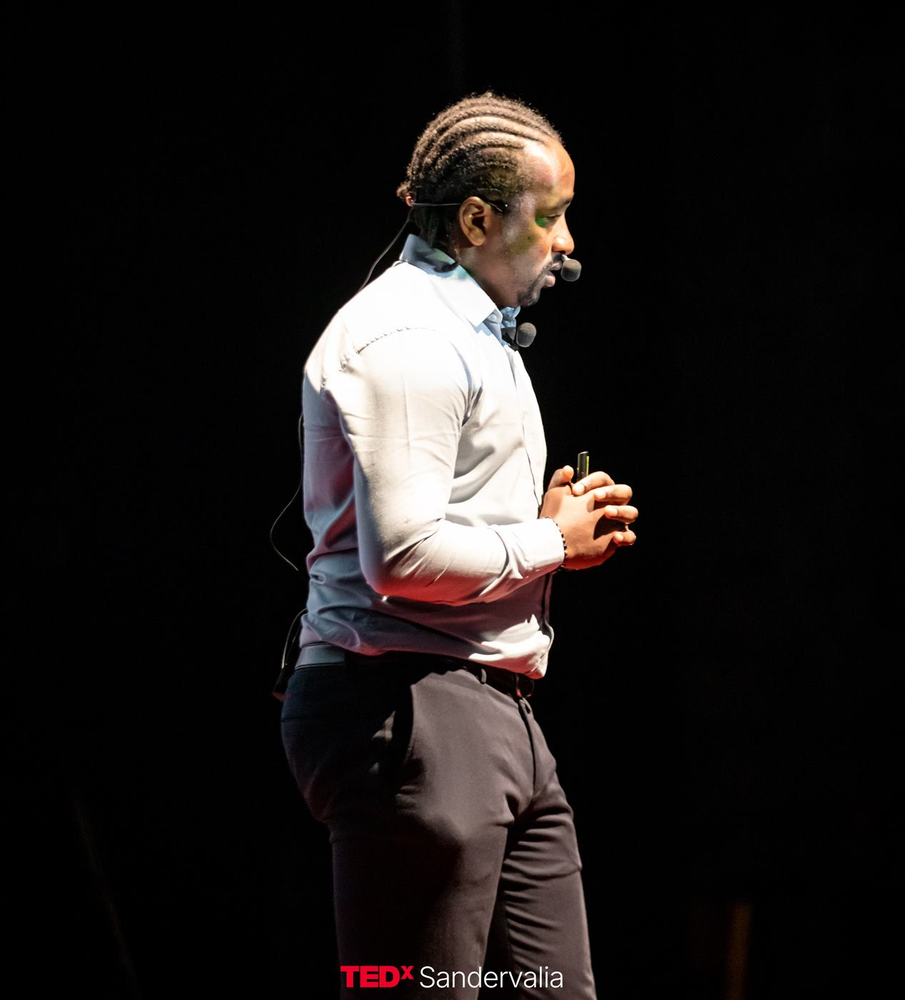
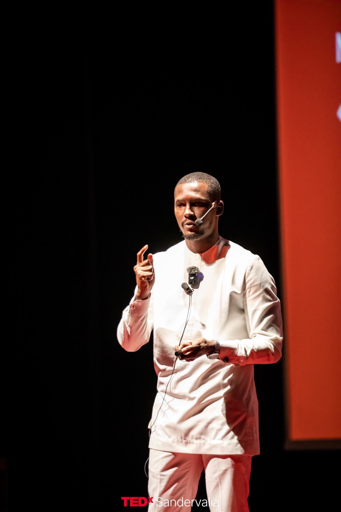
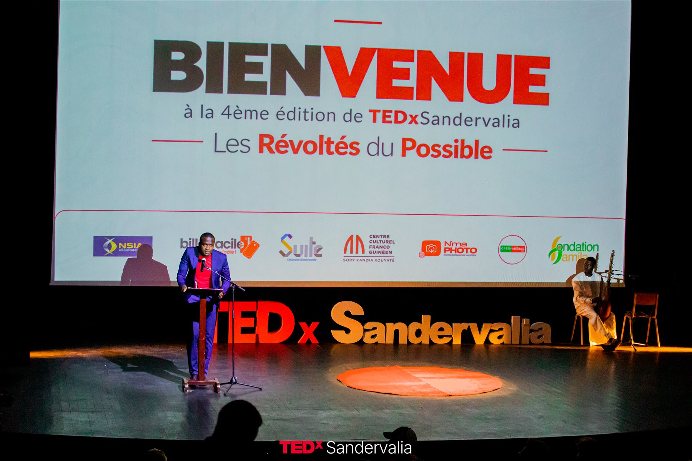

Safiatou Diallo
Responsable développement économique et stratégie, Rio Tinto
Construire l'avenir plutôt que subir le présent

« Les Révoltés du Possible » célèbre celles et ceux qui refusent les limites imposées, qui transforment les obstacles en opportunités et qui osent imaginer, puis construire, un avenir différent.
Entrepreneurs qui innovent malgré le manque de moyens, femmes qui brisent les barrières sociales, jeunes qui créent des solutions là où d'autres ne voient que des problèmes : en Guinée comme ailleurs, cette révolte constructive existe déjà. Cette édition lui a donné une scène.

Cinq parcours, cinq idées. Les vidéos des talks seront publiées sur la chaîne TEDx Talks.

Responsable développement économique et stratégie, Rio Tinto
Construire l'avenir plutôt que subir le présent

Directrice générale de NSIA Assurances Guinée
Femme et assurance : oser, évoluer et diriger

Entrepreneur & Ecosystem Builder
Et si notre plus grande révolution était d'apprendre à construire ensemble ?

Co-fondateur de Toques et Gourmandise Événementiel
Voir le possible en chacun : le regard qui transforme les destins

Fondateur de SUITE
Nous réussissons mieux si nous réussissons ensemble
Deux sessions de talks, un interlude musical et un moment convivial pour prolonger les échanges.

Participants, speakers, partenaires et invités.
Welcome to TEDx, hymne national et discours de bienvenue.
Safiatou Diallo · Maimouna Barry · Amadou Saada Tall
Chants à la gloire de la Guinée.
Ali Baldé · Elhadj Bah
Speakers, bénévoles et comité d'organisation sur scène.
Musique et échanges.
Photos : NMa photo — TEDxSandervalia 2026.
Merci à nos partenaires d'avoir cru en cette vision, à nos bénévoles qui ont donné leur temps, leur énergie et parfois leurs nuits, aux speakers pour leur courage, et à vous, public, d'être venus écouter.
Nos partenaires 2026